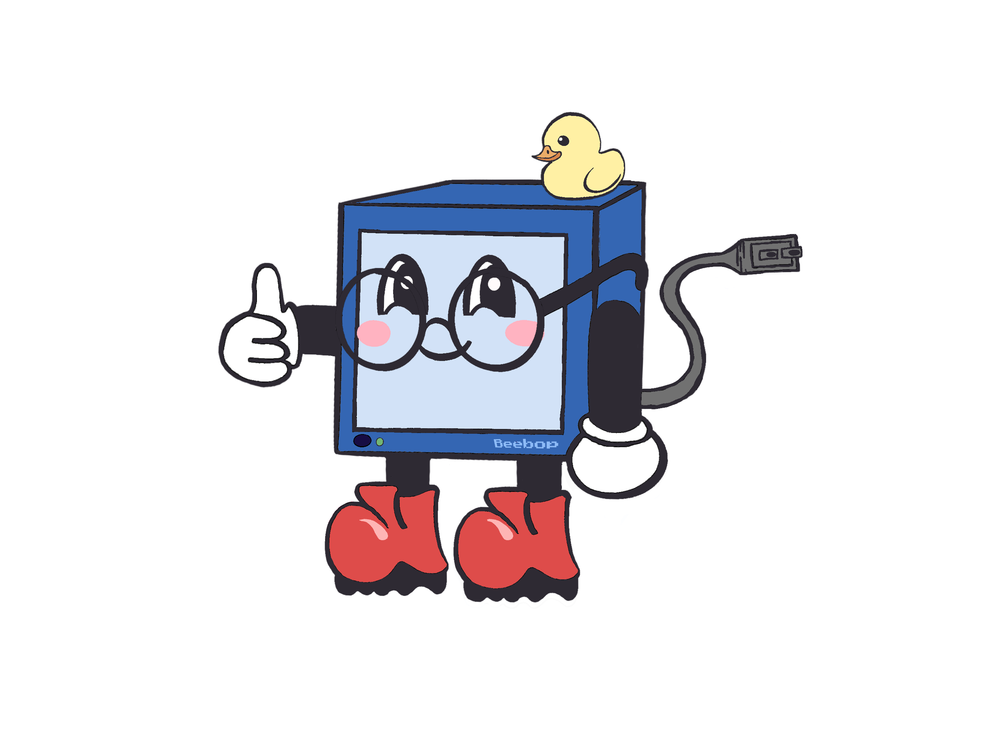

Play a fake person. See what trackers learn.
SpyMeNot is a short game about online tracking. It looks like a friendly search site, but Beebop the robot is quietly collecting data, the way many real sites do.
Your job is to pretend to be someone else and see what happens:
- Invent a fake person.
- Give them fake hobbies and searches.
- See what the trackers think they know.
In real life: Many free sites make money by collecting data about you.

Be careful what you click. Not everything here is what it seems.